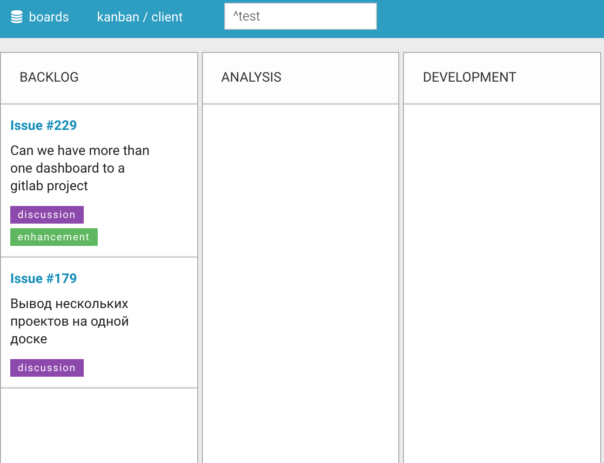
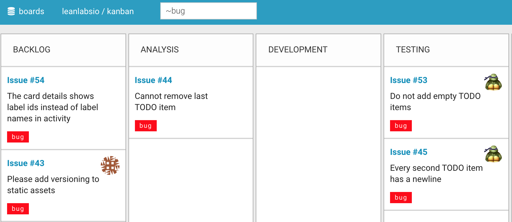
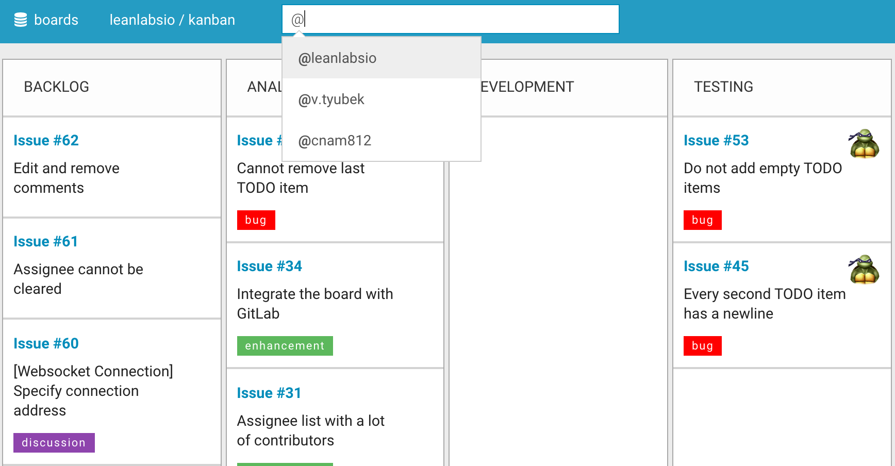
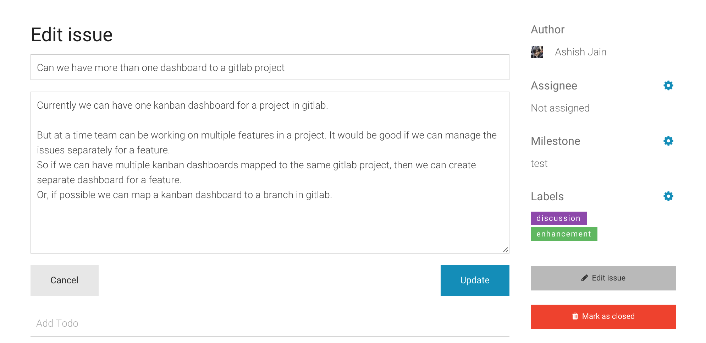
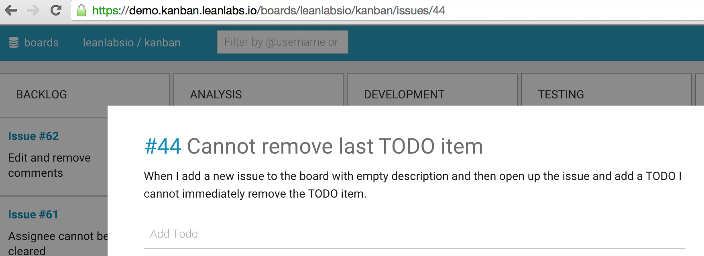
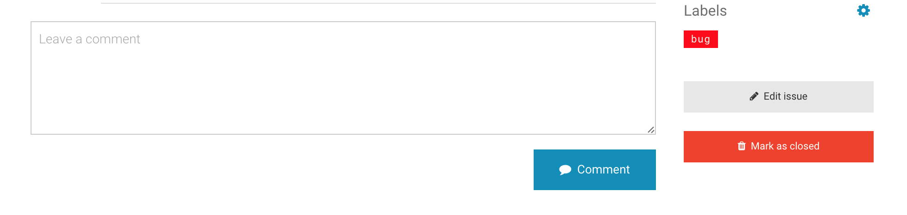

New release - 1.1.2
There have been awhile since our last post. Today we want to tell about improvements we made for this time.
We released several new features:
Filter by milestone. Now you can filter cards by milestones (with “^milestone name” notation).

Filter by label. Now you can filter cards by labels (with “~label name” notation).

Autocomplete in filter. Now filtering is much easier with simple autocomplete.

Hide archived projects. Only active projects are visible on boards list.
Edit issue. Now you can edit issue title and description from the board.

More cards on board. We increased number of cards on board from 50 to 100.
GitLab links. Now you can navigate to issue in GitLab from issue on board. We added links to GitLab issue from issue view on board.

Multiline comments. We changed comment input from “text” to “textarea”, now you can write multiline comments with ease.

And also several bugfixes ;)
- We showed a noisy alert when websocket connection failed requiring you to reload the page. Now page reload automatically on websocket connection fail.
- We fixed docker images versions, “latest” tag was used in several images before, leading to unpredictable updates at some conditions.
- We reduced websocket server image size about 4 times, now updates and deployments should be notable faster.